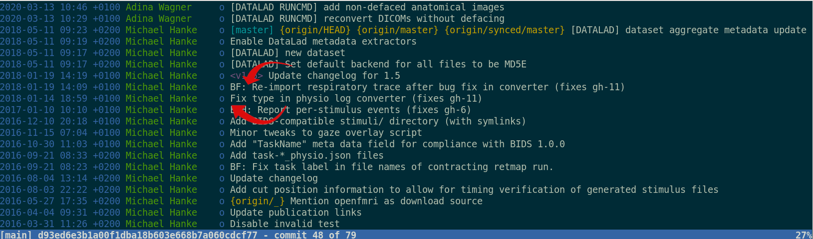
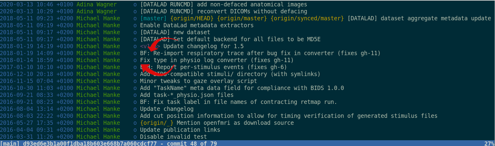

Data Management
|
Dr. Adina Wagner
 mas.to/@adswa
mas.to/@adswa |
|
|
Institute of Neuroscience and
Medicine, Brain & Behavior (INM-7) Research Center Jülich |
DOI: doi.org/10.5281/zenodo.10869053
Slides: files.inm7.de/adina/talks/html/neuraltraces.html
Research data management?


- Domain-agnostic command-line tool (+ graphical user interface),
built on top of Git
 & Git-annex
& Git-annex
- 10+ year open source project (100+ contributors), available for all major OS
- Major features:
- Version-controlling arbitrarily large content
- Version control data & software alongside to code!
- Transport mechanisms for sharing, updating & obtaining data
- Consume & collaborate on data (analyses) like software
- (Computationally) reproducible data analysis
- Track and share provenance of all digital objects
- (... and much more)
- The building blocks of a scientific result are rarely static
| Analysis code, manuscripts, ... evolve (Rewrite, fix bugs, add functions, refactor, extend, ...) |

|
- The building blocks of a scientific result are rarely static
| Data changes, too (errors are fixed, data is extended, naming standards change, an analysis requires only a subset of your data...) |

|
Version control - beyond text files

|
|
Building up on Git and git-annex, DataLad version controls any data
 


Version Control
- DataLad knows two things: Datasets and files
- A DataLad dataset is an Git repository:
- Content and domain agnostic
- Minimization of custom procedures or data structures (user must not lose data or data access if DataLad vanishes)
- Uncomprimised decentralization

Version Control: Data
- Datasets have an optional annex for (large or sensitive) data (or text/code).
- Identity (hash) and location information is put into Git, rather than file content. The annex, and transport to and from it is managed with git-annex → decentralized version control for files of any size.
- DataLad works towards wrapping Git and git-annex into a non-complex core-API (helpful for data management novices).

- Flexibility and commands of Git and git-annex are preserved (useful for experienced Git/git-annex users).
Delineation and advantages of decentral versus central RDM: Hanke et al., (2021). In defense of decentralized research data management
Version Control: Nesting
- Seamless nesting mechanisms:

- hierarchies of datasets in super-/sub-dataset relationships
- based on Git submodules, but more seamless
- Overcomes scaling issues with large amounts of files
adina@bulk1 in /ds/hcp/super on git:master❱ datalad status --annex -r
15530572 annex'd files (77.9 TB recorded total size)
nothing to save, working tree cleanUse DataLad for ...
- ... self-descriptive, reusable projects

Use DataLad to ...
- ... share and consume data like source code

Publishing datasets
- The best of both worlds: Publish to Git hosting services, storage providers, or both

Transport logistics
- Scientific workflows can be idiosyncratic across institutions / departments / labs / any two scientists
- DataLad is built to maximize interoperability and streamline routines across hosting and storage technology


Lots of data, little disk-usage
- Cloned datasets are lean. "Meta data" (file names, availability) are present, but no file content:
$ datalad clone git@github.com:psychoinformatics-de/studyforrest-data-phase2.git
install(ok): /tmp/studyforrest-data-phase2 (dataset)
$ cd studyforrest-data-phase2 && du -sh
18M .$ datalad get sub-01/ses-movie/func/sub-01_ses-movie_task-movie_run-1_bold.nii.gz
get(ok): /tmp/studyforrest-data-phase2/sub-01/ses-movie/func/sub-01_ses-movie_task-movie_run-1_bold.nii.gz (file) [from mddatasrc...]$ datalad drop sub-01/ses-movie/func/sub-01_ses-movie_task-movie_run-1_bold.nii.gz
drop(ok): /tmp/studyforrest-data-phase2/sub-01/ses-movie/func/sub-01_ses-movie_task-movie_run-1_bold.nii.gz (file) [checking https://arxiv.org/pdf/0904.3664v1.pdf...]# eNKI dataset (1.5TB, 34k files):
$ du -sh
1.5G .
# HCP dataset (~200TB, >15 million files)
$ du -sh
48G . dl.get('input/sub-01')
[really complex analysis]
dl.drop('input/sub-01')
Have yourself some data
 > 500TB of open data available at
datasets.datalad.org
> 500TB of open data available at
datasets.datalad.org
Reusing past work
... isn't necessarily simpleYour past self is the worst collaborator:

Lack of provenance can be devastating
- Data analyses or data wrangling is complex
- Move/Copy/Rename/Reorganize/Transform/Compute/... data
- Mistakes propagate through the complete analysis pipeline - especially those early ones are hard to find!

Leaving a trace
"Shit, which version of which script produced these outputs from which version of what data?"
"Shit, why buttons did I click and in which order did I use all those tools?"


Leaving a trace
datalad run wraps around anything expressed in a command line call and saves the dataset modifications resulting from the execution.
datalad rerun repeats captured executions. If the outcomes differ, it saves a new state of them.
datalad containers-run executes command line calls inside a tracked software container and saves the dataset modifications resulting from the execution.


data analysis provenance
Enshrine the analysis in a script
Here: extract_lc_timeseries.py
$ datalad containers-run \
--message "Time series extraction from Locus Coeruleus"
--container-name nilearn \
--input 'mri/*_bold.nii' \
--output 'sub-*/LC_timeseries_run-*.csv' \
"python3 code/extract_lc_timeseries.py"
-- Git commit --
commit 5a7565a640ff6de67e07292a26bf272f1ee4b00e
Author: Adina Wagner adina.wagner@t-online.de
AuthorDate: Mon Nov 11 16:15:08 2019 +0100
Commit: Adina Wagner adina.wagner@t-online.de
CommitDate: Mon Nov 11 16:15:08 2019 +0100
[DATALAD RUNCMD] Time series extraction from Locus Coeruleus
=== Do not change lines below ===
{
"cmd": "singularity exec --bind {pwd} .datalad/environments/nilearn.simg bash..",
"dsid": "92ea1faa-632a-11e8-af29-a0369f7c647e",
"inputs": [
"mri/*.bold.nii.gz",
".datalad/environments/nilearn.simg"
],
"outputs": ["sub-*/LC_timeseries_run-*.csv"],
...
}
^^^ Do not change lines above ^^^
---
sub-01/LC_timeseries_run-1.csv | 1 +
...
data analysis provenance
Record code execution together
with
input-data, output files and software
environment in the
execution-command
$ datalad containers-run \
--message "Time series extraction from Locus Coeruleus"
--container-name nilearn \
--input 'mri/*_bold.nii' \
--output 'sub-*/LC_timeseries_run-*.csv' \
"python3 code/extract_lc_timeseries.py"
-- Git commit --
commit 5a7565a640ff6de67e07292a26bf272f1ee4b00e
Author: Adina Wagner adina.wagner@t-online.de
AuthorDate: Mon Nov 11 16:15:08 2019 +0100
Commit: Adina Wagner adina.wagner@t-online.de
CommitDate: Mon Nov 11 16:15:08 2019 +0100
[DATALAD RUNCMD] Time series extraction from Locus Coeruleus
=== Do not change lines below ===
{
"cmd": "singularity exec --bind {pwd} .datalad/environments/nilearn.simg bash..",
"dsid": "92ea1faa-632a-11e8-af29-a0369f7c647e",
"inputs": [
"mri/*.bold.nii.gz",
".datalad/environments/nilearn.simg"
],
"outputs": ["sub-*/LC_timeseries_run-*.csv"],
...
}
^^^ Do not change lines above ^^^
---
sub-01/LC_timeseries_run-1.csv | 1 +
...
data analysis provenance
Result: machine readable record about which data, code, and
software produced a result how, when, and why.
$ datalad containers-run \
--message "Time series extraction from Locus Coeruleus"
--container-name nilearn \
--input 'mri/*_bold.nii' \
--output 'sub-*/LC_timeseries_run-*.csv' \
"python3 code/extract_lc_timeseries.py"
-- Git commit --
commit 5a7565a640ff6de67e07292a26bf272f1ee4b00e
Author: Adina Wagner adina.wagner@t-online.de
AuthorDate: Mon Nov 11 16:15:08 2019 +0100
Commit: Adina Wagner adina.wagner@t-online.de
CommitDate: Mon Nov 11 16:15:08 2019 +0100
[DATALAD RUNCMD] Time series extraction from Locus Coeruleus
=== Do not change lines below ===
{
"cmd": "singularity exec --bind {pwd} .datalad/environments/nilearn.simg bash..",
"dsid": "92ea1faa-632a-11e8-af29-a0369f7c647e",
"inputs": [
"mri/*.bold.nii.gz",
".datalad/environments/nilearn.simg"
],
"outputs": ["sub-*/LC_timeseries_run-*.csv"],
...
}
^^^ Do not change lines above ^^^
---
sub-01/LC_timeseries_run-1.csv | 1 +
...
data analysis provenance
Use the unique identifier of the execution record
$ datalad rerun 5a7565a640ff6de67
[INFO ] run commit 5a7565a640ff6de67; (Time series extraction from Locus Coeruleus)
[INFO ] Making sure inputs are available (this may take some time)
get(ok): mri/sub-01_bold.nii (file)
get(ok): mri/sub-02_bold.nii (file)
[...]
[INFO ] == Command start (output follows) =====
[INFO ] == Command exit (modification check follows) =====
add(ok): sub-01/LC_timeseries_run-*.csv(file)
add(ok): sub-02/LC_timeseries_run-*.csv (file)
[...]
action summary:
add (ok: 30)
get (ok: 30)
save (ok: 2)
unlock (ok: 30)
data analysis provenance
... to have a machine recompute and verify past work
$ datalad rerun 5a7565a640ff6de67
[INFO ] run commit 5a7565a640ff6de67; (Time series extraction from Locus Coeruleus)
[INFO ] Making sure inputs are available (this may take some time)
get(ok): mri/sub-01_bold.nii (file)
get(ok): mri/sub-02_bold.nii (file)
[...]
[INFO ] == Command start (output follows) =====
[INFO ] == Command exit (modification check follows) =====
add(ok): sub-01/LC_timeseries_run-*.csv(file)
add(ok): sub-02/LC_timeseries_run-*.csv (file)
[...]
action summary:
add (ok: 30)
get (ok: 30)
save (ok: 2)
unlock (ok: 30)
Provenance at the largest scale:


Research data management is tied to reproducibility

Further Information
- Reach out to to the DataLad team via
- Matrix (free, decentralized communication app, no app needed). We run a weekly Zoom office hour (Tuesday, 4pm Berlin time) from this room as well.
- the development repository on GitHub (github.com/datalad/datalad)
- Reach out to the user community with
- A question on neurostars.org
with a
dataladtag - Find more user tutorials or workshop recordings
- On DataLad's YouTube channel (www.youtube.com/channel/datalad)
- In the DataLad Handbook (handbook.datalad.org)
- In the DataLad RDM course (psychoinformatics-de.github.io/rdm-course)
- In the Official API documentation (docs.datalad.org)
- On the advantages of decentralized research data management: doi.org/10.1515/nf-2020-0037
Install it on your own hardware: handbook.datalad.org/r.html?install
Acknowledgements
Thanks!(scan the QR code for slides) |
Funders


Collaborators
|